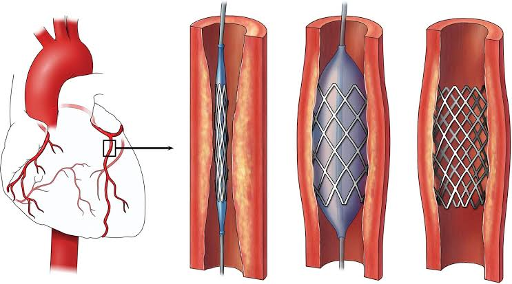

أحدث الأبحاث والمقالات
جاري تحميل المقالات...
مجلة طبية ثقافية - مديرية العدين

د. صلاح الأهدل | مارس 2026
دليل شامل للقسطرة القلبية: أنواعها، دواعي إجرائها، خطوات الإجراء، المخاطر، وما بعد القسطرة...
عملية مراجعة الأقران سريعة وشفافة
أحدث إصدار نشر في أبريل 2026
احصل على إشعارات بالمحتوى الجديد